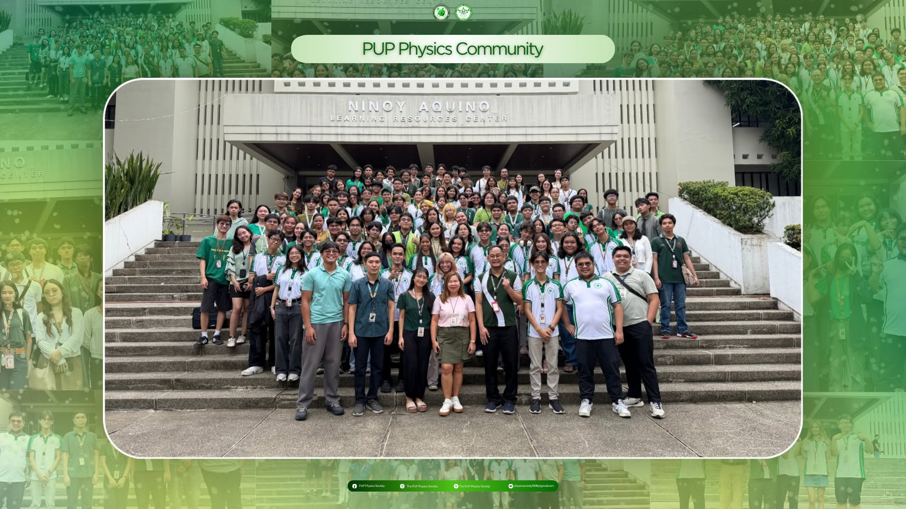
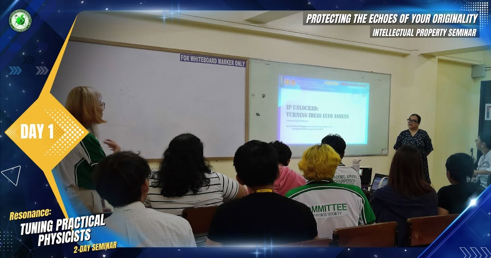

The Bachelor of Science in Physics of the Polytechnic University of
the Philippines is a rigorous undergraduate program designed to provide
students with a strong foundation in fundamental physics, mathematical
methods, experimental techniques, and scientific inquiry. The program
emphasizes the understanding of the laws of the universe governing energy,
matter, space, and time, while fostering analytical thinking, innovation,
and ethical scientific practice.
Established in 1998-1999, the PUP BS Physics program has undergone
several curriculum revisions to remain responsive to advancements in
science, technology, and industry needs. It is currently housed under the
Department of Physical Science in the College of Science and is delivered
through inquiry-based and outcome-oriented learning.
The PUP BS physics curriculum integrates:
- Classical and Modern Physics
- Advance Mathematics
- Laboratory and Instrumentation training
- Computational Analysis
- Research, Collaboration, and Scientific Communication
Students are encouraged to explore specialized topics with the help of
research groups in material science, quantum mechanics, condensed matter
physics, general relativity, atmospheric physics, mathematical physics,
observational astrophysics, and medical physics. While developing 21st
century competencies including critical thinking, leadership, adaptability,
and lifelong learning.
The program prepares its graduates for professional endeavors, research,
and advanced studies, while instilling a strong sense of social responsibility,
scientific integrity, and service to the community that aligned with the mission
and vision of the Polytechnic University of the Philippines.



BS Physics Career Options
Graduates of the BS Physics program acquired highly transferable skills in
quantitative analysis, modeling, experimentation, and problem solving. These
skills enable its graduates to pursue diverse career paths in both laboratory
and non laboratory settings.
1. Research Development
Physics graduates may pursue careers in theoretical, experimental, or applied research,
contributing to scientific discovery, innovation, and technology development in universities,
research institutions, and laboratories.
2. Graduate Studies
The program provides strong preparation for advanced studies such as master's and doctoral
degrees in physics, engineering, data science, medical physics, and other interdisciplinary fields.
3. Applied Industry
Graduates can work in physics-driven industries such as manufacturing, electronics, semiconductors,
and energy, applying principles of physics to instrumentation, quality control, product testing, and process
optimization.
4. Data Science
With strong training in mathematics and analytical thinking, BS Physics graduates are well-suited for data
science roles involving data analysis, modeling, simulation, and computational problem-solving across various
sectors.
5. Medical Physics
Graduates may enter the healthcare sector as medical physics professionals, supporting radiation therapy,
diagnostic imaging, and radiation safety, typically with additional training or graduate studies.
6. Earth Science
Physics graduates can specialize in geophysics, meteorology, atmospheric science, or environmental physics,
working on climate analysis, natural hazard assessment, and Earth system research.
7. Space Science
Careers in astrophysics and space science involve the study of celestial objects and cosmic phenomena,
often pursued through research institutions or advanced academic training.
8. Science Education
Graduates may become physics educators or academic instructors, teaching at secondary or tertiary levels
and promoting scientific literacy, critical thinking, and inquiry-based learning.
9. Science Communication
Graduates can pursue roles in science writing, technical communication, or policy support, translating
complex scientific concepts into clear, accessible information for diverse audiences.
10. Technical Consulting
Physics graduates may work as technical consultants or analysts, providing expert problem-solving, modeling,
and evidence-based solutions in science-oriented organizations.